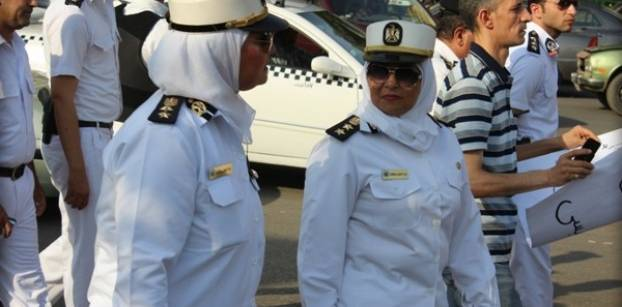
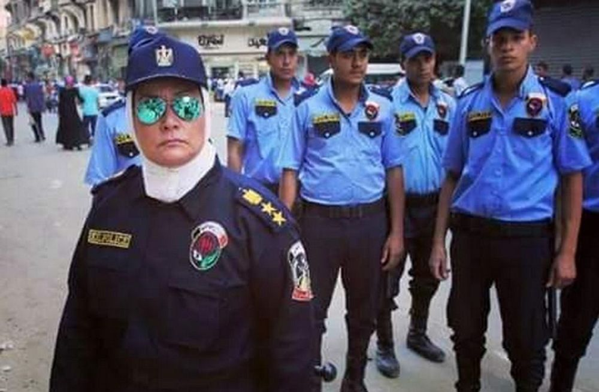

مع تقدم الزمن وتغير الثقافات والتطورات الاجتماعية، أصبح دور المرأة في مجالات العمل والمجتمع أكثر بروزًا وأهمية، ومن بين هذه المجالات تبرز دور المرأة في الشرطة. تعد الشرطة النسائية في مصر مثالًا بارزًا على هذا التطور، حيث شهدت تطورًا ملحوظًا خلال السنوات الأخيرة. يركز هذا التقرير على استعراض دور الشرطة النسائية في مصر وتطورها عبر الزمن، بالإضافة إلى الجهود المبذولة لتعزيز دورها في مجالات مكافحة الجريمة، وحماية حقوق المرأة، وتحقيق الأمن والاستقرار في البلاد. سنلقي الضوء على المبادرات التي اتخذتها الحكومة المصرية لتعزيز دور الشرطة النسائية، بالإضافة إلى التحديات التي تواجهها والتطلعات المستقبلية لتطوير هذا القطاع المهم
تمكنت الشرطة النسائية في مصر من البروز واثبات الجدارة على مدار السنوات الأخيرة بفضل الجهود المتواصلة للدفاع عن قضايا العنف ضد المرأة بكافة اشكاله النفسية واجسديه، حيث تم توفير فرص التدريب والتأهيل المكثفة للنساء الراغبات في الانضمام إلى صفوف الشرطة، مما أتاح لهن فرصة اكتساب المهارات اللازمة لتنفيذ مهامهن بكفاءة وفعالية. بالإضافة إلى ذلك، شجعت السلطات السياسية والقيادية على المستوى المحلي والوطني تقديم الدعم الكامل للشرطة النسائية، وتمكينها من تولي المناصب القيادية داخل الوزارة، مما أدى إلى تعزيز مكانتهن وتأثيرهن في العمل الشرطي، وبالتالي تحسين أدائهن في مكافحة الجريمة وتحقيق الأمن والاستقرار في البلاد بشكل شامل وفعّال.
نماذج ونجاحات
وتمتلك الضابطات النساء في وزارة الداخلية في مصر اثرا واضح من الإنجازات والتفوق في العمل الشرطي، حيث تمكنت من تولي مناصب قيادية مرموقة داخل الوزارة. من بين هذه المناصب، تم تعيين العديد من الضابطات برتبة "اللواء"، والتي تعتبر أعلى رتبة داخل الشرطة. بالإضافة إلى ذلك، تولت الضابطات مسؤولية قيادة الأقسام والإدارات المختلفة داخل الوزارة، وشغلن مناصب في القيادة المحلية والوطنية، مثل قيادة الأمن العام والأمن الوطني والمرور. وقد أظهرن كفاءتهن واستعدادهن لتنفيذ المهام الحساسة والمتنوعة في مجالات متعددة من العمل الشرطي. وتعتبر هذه الإنجازات دليلاً قويًا على التقدم الذي تحققه الضابطات النساء في مصر في مجال الأمن، وتعزز مكانتهن كشركاء أساسيين في حفظ الأمن والاستقرار في البلاد. كما شاركت الشرطة النسائية بفاعلية في قوات حفظ السلام، وقدمت إسهامات قيمة في تعزيز الأمن والاستقرار في مناطق النزاعات. من خلال مشاركتهن في هذه القوات، عملت الضابطات النساء على تقديم الدعم الأمني والمساعدة في بناء الثقة بين الأطراف المتحاربة، وذلك من خلال تطبيق القوانين وحفظ النظام وحقوق الإنسان. بالإضافة إلى ذلك، شاركت الشرطة النسائية في إعادة بناء البنية التحتية الأمنية والقانونية في تلك المناطق، وتوفير الدعم الأمني للمدنيين والمنظمات الدولية.
ومن الأمثلة على ذلك، قيادة اللواء ناهد الواحي، التي كانت أول ضابطة شرطة تشارك في قوات حفظ السلام، حيث عملت في مهمات دولية بالمغرب. بفضل جهودهن، تم تعزيز الأمن والاستقرار في تلك المناطق، وتمكين الشرطة النسائية من القيام بدور رئيسي في تعزيز السلام الدولي ومكافحة الجريمة على المستوى العالمي.
التدريب والتاهيل
التدريبات والتأهيل التي تلقتها الضابطات في الشرطة المصرية لها أهمية كبيرة في تمكينهن من أداء واجباتهن بكفاءة وفعالية. تلك التدريبات تساعد الضابطات على تطوير مهاراتهن وزيادة قدراتهن في التعامل مع مختلف الظروف والمواقف التي قد تواجههن في مهنتهن الشرطية. كما تمكّنهن من التعامل بفعالية مع التحديات الأمنية المتنوعة والتي تشمل مكافحة الجريمة، وحفظ الأمن والنظام، وتوفير الحماية للمجتمع. بالإضافة إلى ذلك، فإن التدريبات تعزز فهم الضابطات للقوانين والأنظمة المحلية والدولية، وتمكنهن من تطبيقها بدقة وعدالة في أداء واجباتهن اليومية. كما تساهم في بناء الثقة بين الشرطة والمجتمع، حيث يشعر الناس بالراحة والأمان عندما يرون أن الشرطة مدربة ومهيأة للتعامل مع أي موقف بكفاءة وحسن تصرف. و بشكل عام، يمكن القول إن التدريبات والتأهيل تلعب دورًا حاسمًا في تحسين أداء الشرطة النسائية في مصر وتعزيز الثقة بينهن وبين المجتمع، مما يساهم في تحقيق الأمن والاستقرار في البلاد.
وفيما يلي عرض لمهارات الشرطة النسائية المصرية في الحراسات الخاصة من طالبات كلية الشرطة والذي تناقلته القنوات التلفزيونية المصرية في اطار تخرج دفعه عام 2022 من طلاب كلية الشرطة
المهام والادوار
دور الشرطة النسائية في مكافحة الجريمة وتحقيق الأمن العام في مصر يتمثل في مجموعة من الأنشطة والمهام التي تسهم في تحقيق الأمن والسلامة العامة للمواطنين. فبالإضافة إلى تنفيذ القوانين وتطبيق العقوبات، تقوم الشرطة النسائية بالمشاركة الفعالة في التحقيقات الجنائية، حيث تقوم بجمع الأدلة والشهادات وتحليل البيانات للكشف عن المجرمين وتقديمهم للعدالة. علاوة على ذلك، تقوم الشرطة النسائية بتوفير الحماية للمجتمع من خلال تنفيذ الإجراءات الأمنية والتدابير الوقائية، وذلك من خلال توزيع الدوريات الأمنية ومراقبة المناطق المحتملة لحدوث الجرائم. كما تعمل على التوعية والتثقيف الأمني للمواطنين، من خلال تقديم النصائح والإرشادات حول السلامة الشخصية والوقاية من الجريمة. وتعتبر الشرطة النسائية شريكًا رئيسيًا في تعزيز الأمن والاستقرار في البلاد من خلال التعاون الدولي في مكافحة الجريمة، حيث تشارك في الجهود الدولية لمكافحة الجرائم العابرة للحدود مثل تهريب المخدرات وتجارة البشر. وبفضل هذه الأنشطة والمهام، تسهم الشرطة النسائية بشكل كبير في تحقيق الأمن العام والسلامة العامة للمجتمع في مصر.
وعلاوة على ذلك اتخذت وزارة الداخلية في مصر مجموعة من المبادرات الشاملة لتعزيز دور الشرطة النسائية في المجال الأمني، حيث ركزت على عدة جوانب منها. أولاً، قامت بترقية الضابطات النساء لتولي مناصب قيادية داخل الوزارة، مما أتاح لهن الفرصة للمشاركة في صنع القرار وتوجيه السياسات الأمنية بشكل فعال. ثانياً، قامت بتوسيع نطاق التوظيف للنساء في صفوف الشرطة، وذلك من خلال فتح باب القبول لخريجات كليات الحقوق والتربية الرياضية للالتحاق بكلية الشرطة، مما أدى إلى زيادة العدد الكلي للعناصر النسائية في الشرطة وتعزيز تمثيلهن في الخدمة الأمنية. ثالثاً، نظمت وزارة الداخلية برامج تدريبية متخصصة للضابطات النساء، تشمل تطوير مهاراتهن في مجالات مكافحة الجريمة والتحقيق الأمني والتعامل مع الحالات الطارئة، مما جعلهن على استعداد تام لمواجهة التحديات الأمنية بكل فاعلية وكفاءة. رابعاً، قامت بتنظيم حملات توعية وتثقيفية حول دور الشرطة النسائية وأهميتها في المجتمع، بهدف تعزيز الثقة بين الجمهور والشرطة، وتعزيز التعاون والتفاهم المشترك في مجال الأمن. وأخيرًا، قامت بتطوير التجهيزات والتقنيات الأمنية المستخدمة في أعمال الشرطة النسائية، مما ساهم في تحسين كفاءة الأداء وتعزيز القدرات التكنولوجية لهذا القطاع الحيوي من الجهاز الأمني. هذه المبادرات جميعها تعكس التزام الوزارة بتعزيز دور الشرطة النسائية وتطويرها لتكون عنصراً فاعلاً في تحقيق الأمن والاستقرار في البلاد.
المهام والتشريعات
وقامت الشرطة النسائية في مصر بمجموعة متنوعة من المهام القتالية التي تعززت من خلالها قدراتها ومهاراتها في التعامل مع الجرائم الخطيرة وتحقيق الأمن والاستقرار في البلاد. من بين هذه المهام، تمت تدريب الشرطيات النسائيات على مختلف جوانب التصدي للجرائم العنيفة والتعامل مع الوضعيات الطارئة، بما في ذلك تحرير الرهائن ومواجهة الخارجين عن القانون. وقد شهدت هذه المهام نجاحًا ملحوظًا، حيث تمكنت الشرطة النسائية من تطبيق المهارات والتقنيات التي اكتسبتها في التدريبات على أرض الواقع بكفاءة عالية، مما أسهم في تحسين الأمن والسلامة العامة في المجتمع. بالإضافة إلى ذلك، فقد أثبتت الشرطة النسائية قدرتها على العمل ضمن الفرق القتالية المختلطة بفاعلية، حيث تمتلك القدرة على التعاون والتنسيق مع زملائها الذكور في مواجهة التحديات الأمنية بشكل متكامل ومتناغم. وبهذا الشكل، تظل الشرطة النسائية في مصر عنصرًا حيويًا وفعالًا في الجهود الرامية إلى تعزيز الأمن وحفظ النظام في البلاد. كما نجحت الشرطة النسائية في مصر في تطوير مهاراتها في مجال مكافحة العنف المبني على النوع من خلال عدة إجراءات وبرامج تدريبية متخصصة. أولاً، قامت بتنظيم دورات تدريبية خاصة تستهدف تعزيز فهم الضباط للعوامل التي تسهم في حدوث العنف المبني على النوع وكيفية التعامل معه بفعالية. ثانياً، قدمت الشرطة النسائية برامج توعية وتثقيفية لأفراد المجتمع حول مخاطر العنف المبني على النوع وكيفية الوقاية منه والتبليغ عنه. ثالثاً، نظمت ورش عمل وجلسات تفاعلية تشجع على تبادل الخبرات والمعرفة بين أفراد الشرطة النسائية لتحسين الفعالية في التعامل مع حالات العنف المبني على النوع. وأخيرًا، تبنت الشرطة النسائية استراتيجيات مبتكرة للتحقق من الشكاوى والبلاغات المتعلقة بالعنف المبني على النوع والتحقيق فيها بشكل سريع وفعال، مما يسهم في تقديم الدعم والحماية للضحايا وتحقيق العدالة. هذه الجهود المبذولة تعكس التزام الشرطة النسائية في مصر بتعزيز الأمن والسلامة للمجتمع بشكل شامل وفعال.
وايضا تم في مصر تعديل العديد من التشريعات واعتماد آليات جديدة لحماية المرأة من العنف المبني على النوع وتعزيز دور الشرطة النسائية في هذا الصدد، حيث شملت هذه التعديلات إعادة صياغة قوانين العقوبات لتشمل مواد تجرم العنف المنزلي والاعتداء على المرأة، بالإضافة إلى تشديد العقوبات على المتحرشين والمعتدين بحق النساء، وتمكين الشرطة النسائية من التدخل الفعال في حماية النساء وتطبيق القانون، كما شهدت مراكز الشرطة إنشاء أقسام خاصة بالمرأة لتيسير تقديم البلاغات والشكاوى، بالإضافة إلى تطوير برامج التوعية والتثقيف حول خطورة العنف المبني على النوع وكيفية الوقاية منه، وقد تم توفير التدريب والتأهيل المتخصص لضباط الشرطة النسائية لتعزيز مهاراتهن في التعامل مع حالات العنف وتقديم الدعم للضحايا، مع تعزيز الشراكة المجتمعية لزيادة الوعي وتشجيع النساء على الإبلاغ عن الحالات المشبوهة والتعاون مع الجهات المعنية لمحاربة هذه الظاهرة بشكل شامل وفعال.
وفي ختام هذا الموضوع، نجد أن دور الشرطة النسائية في مصر قد شهد تطورًا ملحوظًا خلال السنوات الأخيرة، حيث تمكنت من الاندماج بشكل فعّال في أجهزة الشرطة وأصبحت جزءًا لا يتجزأ من مساعي البلاد في مكافحة الجريمة وتحقيق الأمن العام. بفضل التدريبات المكثفة والتأهيل المتخصص، استطاعت الضابطات النساء تطوير مهاراتهن في مجالات عدة، بما في ذلك مكافحة العنف المبني على النوع، وتقديم الدعم للضحايا، وتأمين المناطق المضطربة والمشاركة في قوات حفظ السلام، مما ساهم في تعزيز الأمن والاستقرار داخل مصر وخارجها. ومع تعزيز التشريعات والآليات القانونية لحماية حقوق المرأة ومكافحة العنف، وتوفير بيئة مواتية لازدهار دور الشرطة النسائية، يمكن أن نتوقع استمرار تقدمها وتطورها في سبيل تحقيق مجتمع أكثر أمنًا وعدالة